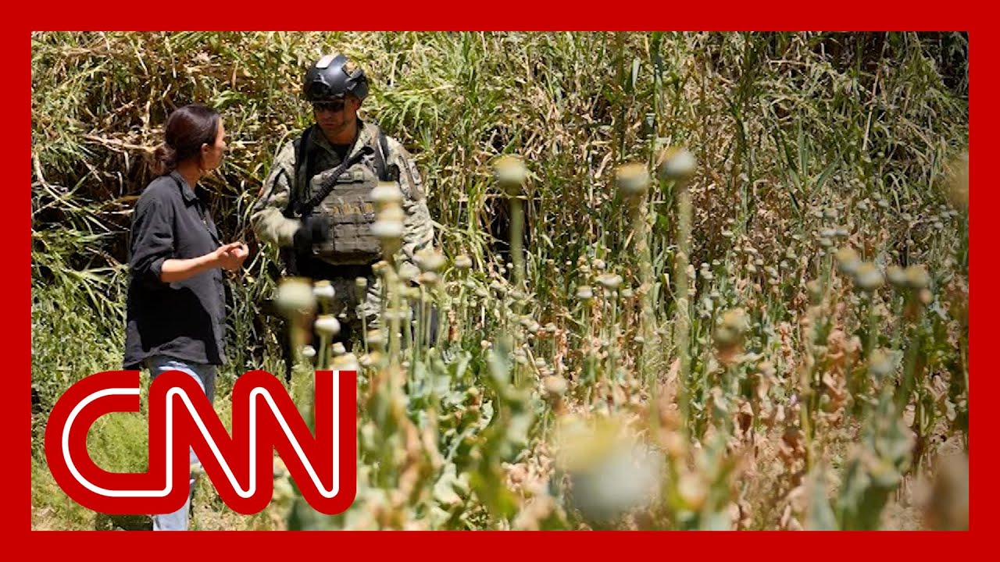

来B站一起耍【Global每日英语简报】
【墨西哥打击贩毒集团行动内幕：特朗普拟将嫌疑人列为“敌方战斗人员”】
Summary: The Trump administration considers labeling suspected cartel members in the U.S. as enemy combatants, stripping them of legal rights, while pressuring Mexico to intensify its crackdown, where military operations face challenges amid cartel violence and civilian casualties.
摘要： 特朗普政府考虑将在美贩毒集团嫌疑人列为敌方战斗人员，剥夺其法律权利，同时施压墨西哥加大打击力度，但军事行动面临贩毒集团暴力和平民伤亡的挑战。

⏱️ Estimated Reading Time: 10 min
This is actually an executive or designating the cartels and other organizations to be foreign terrorist organizations.
这实际上是一项行政命令，将贩毒集团和其他组织指定为外国恐怖组织。
That's a big one.
这是一项重大举措。
Yes, sir.
是的，先生。
One of President Trump's very first executive orders was to designate drug cartels as foreign terrorist organizations.
特朗普总统最早签署的行政命令之一就是将贩毒集团列为外国恐怖组织。
And now CNN's Natasha Bertrand reports for us that the Trump administration is considering labeling some suspected cartels inside the United States as enemy combatants.
现在CNN的娜塔莎·伯特兰报道称，特朗普政府正考虑将在美国境内的一些疑似贩毒集团成员列为敌方战斗人员。
You heard that term a lot after the 9/11 attacks.
这个术语在9/11袭击后被频繁使用。
Sources tell CNN that that label could strip these individuals of any legal rights.
敌方战斗人员。
It could theoretically justify potential legal strikes against them.
消息人士告诉CNN，这一标签可能剥夺这些人的所有法律权利。
We've also seen the president pressure the Mexican president, Claudia Sheinbaum, to take more action against the cartels in Mexico.
理论上，这可以为针对他们的潜在法律打击提供依据。
He has threatened tariffs and military strikes.
我们还看到总统向墨西哥总统克劳迪娅·辛鲍姆施压，要求加大对墨西哥贩毒集团的打击力度。
The Mexican government has responded.
他威胁要实施关税和军事打击。
It's sent hundreds of troops to the state of Sinaloa.
墨西哥政府已作出回应。
So CNN's brand new international correspondent Isabel Jung, also went there to see this drug war firsthand.
它向锡那罗亚州派遣了数百名士兵。
With the Mexican military in the state of Sinaloa, the heartland of the infamous Sinaloa Cartel.
因此，CNN新任国际记者伊莎贝尔·荣也前往当地，亲眼目睹这场毒品战争。
Soldiers find and burn acres of poppies that would otherwise be turned into heroin by just looking for a place to land, which is easy given that it's just hills and trees everywhere.
与墨西哥军队一起在锡那罗亚州，这里是臭名昭著的锡那罗亚贩毒集团的大本营。
But it's synthetic drugs like fentanyl and meth that are produced by the cartels in enormous quantities, generate huge profits, and are responsible for most overdose deaths in the U.S.
士兵们发现并烧毁了数英亩的罂粟田，这些罂粟本会被制成海洛因，他们只需找个地方降落，这很容易，因为这里到处都是山丘和树木。
They're often made in remote rural labs, but it's often concentrated in Los Productos chemicals located across the street.
但贩毒集团大量生产芬太尼和冰毒等合成毒品，这些毒品利润巨大，并导致美国大多数吸毒过量死亡。
This is pretty tough work.
它们通常在偏远的乡村实验室制造，但往往集中在街对面的洛斯 productos 化学品店。
I mean, they're wearing full hazmat suits.
这是一项相当艰巨的工作。
They have to wear masks because these drugs, obviously, and the chemicals are very, very toxic.
他们穿着全套防护服。
But they're just trying to make sure that the cartels don't come back and finish making the drugs here.
他们必须戴口罩，因为这些毒品和化学品显然非常有毒。
Over a six-month period, thousands of suspected cartel members have been arrested across Mexico, and more than 140 tons of drugs have been seized.
但他们只是试图确保贩毒集团不会回来完成毒品的制造。
But the reality is, more than 12 people have also been killed in Sinaloa in the past year.
在六个月内，墨西哥各地已有数千名疑似贩毒集团成员被捕，缴获毒品超过140吨。
Hundreds more have disappeared, fueled by a vengeful war between two rival factions of the Sinaloa Cartel.
但现实是，过去一年锡那罗亚州还有12多人被杀。
In downtown Culiacan, the capital of Sinaloa, the military's narrative that they are fully in control begins to unravel.
还有数百人失踪，这是锡那罗亚贩毒集团两个敌对派系之间的复仇战争所致。
Very stark reminders here of people who are missing, who have been disappeared as part of this cartel war between the two factions that's playing out right now.
在锡那罗亚州首府库利亚坎市中心，军方完全掌控的说法开始瓦解。
Very recent cases.
这里非常明显地提醒着人们，有人失踪，有人在这场正在进行的两个派系之间的贩毒集团战争中消失。
This was last week.
非常近期的案件。
Those who cannot say if they are safe.
这是上周的事。
What do you mean?
一名23岁的年轻人失踪了。
Those posters are old?
那些无法确定自己是否安全的人。
No, this is the post.
你是什么意思？
The date here.
那些海报是旧的？
This is the 22nd of March.
不，这是海报。
They went missing, right?
日期在这里。
Esto. Esto es una copia.
这是3月22日。
It's a copy.
他们失踪了，对吧？
Who put this?
这是。这是一份副本。
We're not. We don't know.
这是一份副本。
As we're talking, a soldier blocks our camera.
谁贴的？
You mean it's not verified?
我们不知道。
Yeah.
我们说话时，一名士兵挡住了我们的摄像机。
Presumably people aren't just putting up posters for the fun of it.
你的意思是这未经核实？
They're putting them up because they're missing family members, right?
是的。
No. That's what's up.
大概人们贴海报不是为了好玩。
You don't want us filming it?
他们贴海报是因为家人失踪了，对吧？
The military steer us off and invite us to film something else.
不。就是这样。
But we call the number on the poster of the missing woman.
你不想让我们拍摄？
Her name is Vivian Espero.
军方把我们引开，邀请我们拍摄其他东西。
Her family tell us she disappeared 17 days ago.
但我们拨打了失踪女子海报上的电话。
We promised to follow up on her case.
她的名字是维维安·埃斯佩罗。
But who are the men running this criminal network wreaking havoc on people living here?
她的家人告诉我们，她17天前失踪了。
We part ways with the military.
我们承诺跟进她的案件。
So we've just entered an area of the city that is still very dangerous.
但谁是经营这个犯罪网络、给当地居民带来灾难的人？
After weeks of trying, our contacts on the ground just managed to secure a meeting with a member of the cartel who's involved, apparently, in the production of drugs.
我们与军方分道扬镳。
And so we're meeting him now in somewhere around here in an undisclosed location.
所以我们刚刚进入了城市中仍然非常危险的区域。
Coming?
经过数周的努力，我们在当地的线人设法安排了一次与一名贩毒集团成员的会面，他显然参与了毒品生产。
The podcast on social media to seemingly local reporters.
所以我们正在附近一个未公开的地点与他见面。
When we look at I know there was a lot of violence playing out on these streets here at the moment, every day.
来吗？
I mean, people are dying on a daily basis.
这名男子与我们交谈的条件是我们隐藏他的身份和位置。
Children are afraid to go to school.
我可以拉把椅子吗？
Do you have any sense of remorse over your role and your involvement in this group?
他说他为锡那罗亚贩毒集团生产芬太尼。
And ultimately, tell me if they thought that you.
这个地区有多安全或危险？
Just thought that this.
记者：当地警察和墨西哥军方正在大力打击这里的毒品生产。
Whole thing by his phone is pinged.
你如何应对，这对你的工作有何影响？
Someone is nearby.
你们中有人知道，当我们离家更近一点时，或者你们真的必须想出办法。
He tells us we need to leave for our own safety.
这与劳雷尔的情况相同，并为...工作。
Oh.
这里没有人想要胆小鬼。
But it's because of the actions of cartel members like these that civilians, too, are caught up in the violence.
我在这里看到了这个。
Vivian Izquierdo, the missing woman from the poster we saw two days ago, was one of them.
我的意思是，根据特朗普政府的说法，你是恐怖分子。
Her body has just been found.
贩毒集团已被列为外国恐怖组织。
Like. I'm so sorry for your loss, but really am.
你对此有何看法，或者作为当地罪犯？
Are you able to tell me a little about your sister?
如果唐纳德·特朗普正在观看，你想对他说什么？
Your mother?
你刚才说，我们比你先知道会发生什么。
It was done.
在社交媒体上向看似当地记者的播客。
Mutual.
当我们看到...我知道此刻这些街道上每天都有很多暴力事件发生。
Los gatos harvest that Lady Gaga.
我的意思是，每天都有人死亡。
You are going to say that's who.
孩子们害怕上学。
Concierto. That's right.
你对自己的角色和参与这个团体有任何悔意吗？
Yeah, I Vivian.
最终，告诉我他们是否认为你...
Sister believe she wasn't directly involved with the cartels.
只是认为这个...
But the conflict here has broken all norms, she says.
整个事情因为他的电话被定位了。
And violence has come for everyone, including women and children.
有人在附近。
I mean, the authorities are saying that they're going after the bad guys.
他告诉我们，为了自身安全，我们需要离开。
They're making a lot of arrests.
哦。
They're going after the drugs.
但正是因为这些贩毒集团成员的行为，平民也被卷入了暴力之中。
They're going after the weapons.
维维安·伊斯基耶多，我们两天前在海报上看到的失踪女子，就是其中之一。
Do you feel like they're not doing enough?
她的尸体刚刚被发现。
No, no no no.
就像...我对你的损失感到非常抱歉，但确实如此。
Look at this case.
你能告诉我一些关于你姐姐的事吗？
Impossible to be it.
你的母亲？
Thank you for talking with us.
已经完成了。
You know, being so, so strong, she'd be so proud of you and say thank you.
相互的。
I think this is more than the visibility that I mean, among these.
Los gatos 收获了 Lady Gaga。
For Vivian's family, the authorities' efforts amount to nothing more than anguish.
你会说那就是谁。
Isabel Young, CNN, Sinaloa, Mexico.
音乐会。没错。